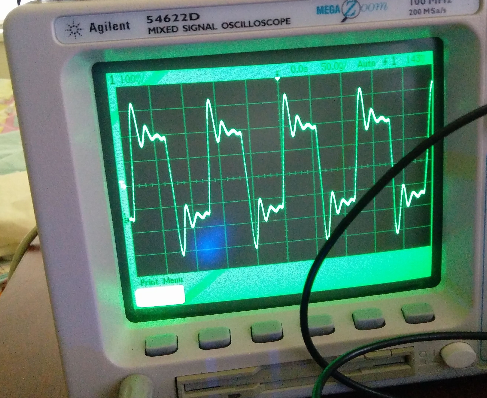
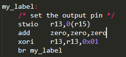
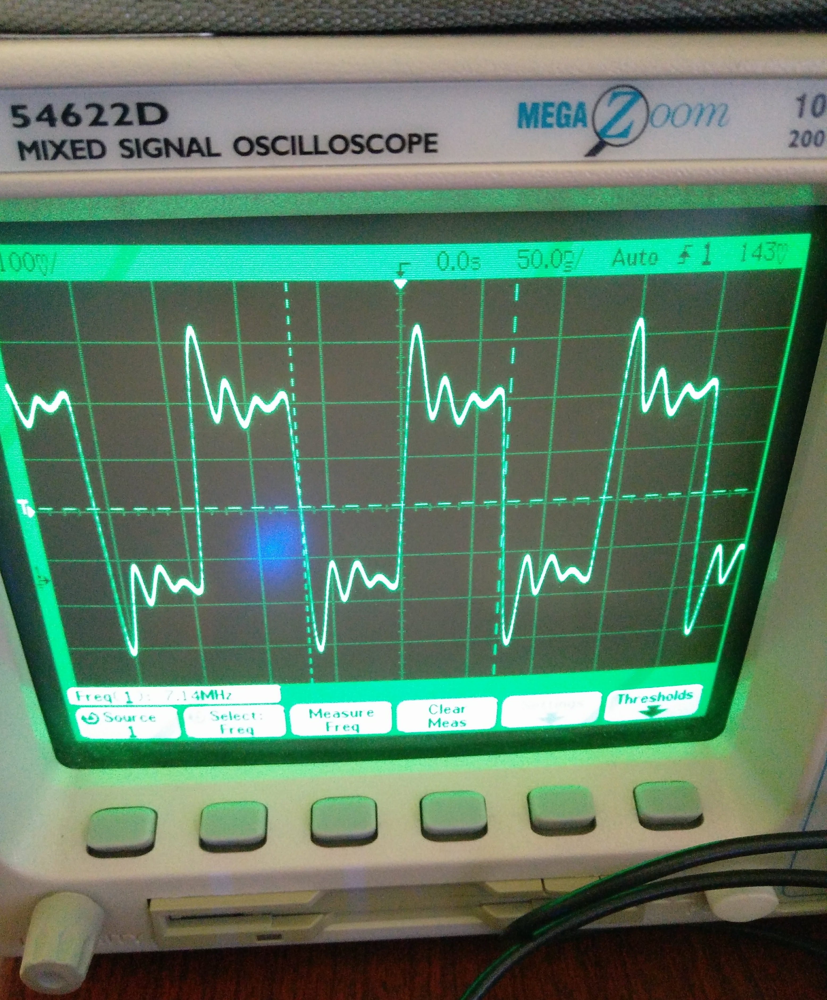

This file will give the overview of the project.
The goal of the project was to analyze the timing of NIOS-f processor in DE1-SoC board. The processor runs at 100Mhz (period t = 10 nanoseconds).
A simple application to toggle output on a pin was created. For this, the parallel port at location 0xff200060 is used. One of the pins, D0, was configured as output.
Using a simple infinite loop, the output on D0 was toggled. The goal was to see the maximum achievable toggle frequency.
Following is the code that was used for this purpose. The final code in the source file might have been edited already.
In the code, r15 contains the address of parallel port where the oscilloscope is connected.
r13 contains a value 0x01
Following is the output obtained as observed in the oscilloscope.
From the image in Observation 1, we can see the period of the signal is 112.5 nanoseconds., which is the time for a complete cylce of waveform. This indicates the time taken by the three lines of assembly code is 112.5/2 = 56.25 nanoseconds.
The code was slighly modified. A nop instruction was added before the value is toggled. In NIOS, a nop instruction does not exist. This means, the nop instruction will be replaced by add zero, zero, zero.
Following is the code that was used for this purpose.
Following is the output obtained as observed in the oscilloscope.
From the image in Observation 2, we can see the period of the signal is 140 nanoseconds., which is the time for a complete cylce of waveform. This indicates the time taken by the four lines of assembly code is 140/2 = 70 nanoseconds.
This shows that adding one nop instruction takes additional
70-56.25 nanoseconds
= 13.75 nanoseconds